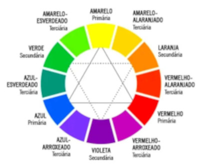
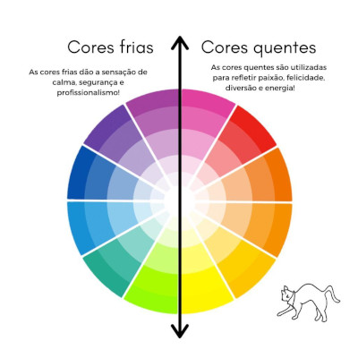

13/01/2025 🤖
Harmonia das Cores
Circulo Cromatico
O circulo cromatico possui ao todo 65 milhões de variações de cores, porem por agora só vamos usar as 12 principais.

Dentro do circulo cromatico tem cores primarias, secundarias e terciarias. Sendo elas:
- Primarias
- Secundarias
- Terciarias
- Amarelo Esberdeado, Amarelo Alaranjado, Vermelho Alaranjado, Vermelho Arroxeado, Azul Arroxeado e Azul Esverdeado
OBS: As cores terciarias são a junção das cores primarias e secundarias
Cores Quentes e Frias
